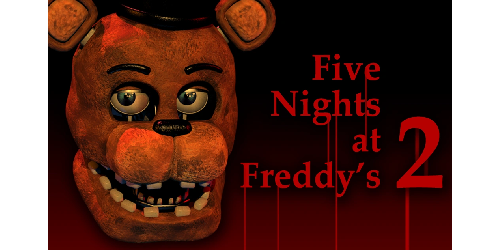

In *Five Nights at Freddy's 2*, the player takes on the role of Jeremy Fitzgerald, the new night security guard. This game introduces new animatronics and new gameplay elements, such as the use of a Freddy Fazbear mask to fool the animatronics and the constant monitoring of security systems. Timeline: This game takes place before the events of the first game, serving as a sort of prequel. It explores the dark events that led to the closure of the original pizzeria. Attacks: During the nights, the animatronics are drawn to the player and attack. The new animatronics have facial recognition, but something went wrong, and they attack indiscriminately. Purple Man: Recordings suggest that the Purple Man, the killer of the children, is involved in the events.
